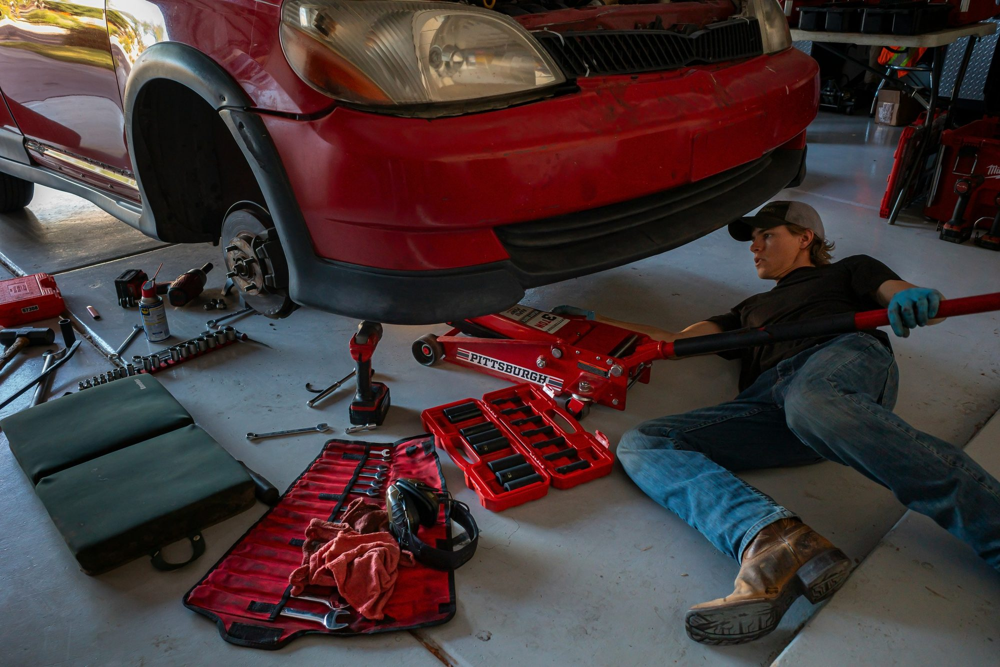

Auto body and customization for New Haven drivers.
A short trip up I-91 or Route 5 from downtown New Haven. Collision repair, refinishing, PPF, ceramic coating, tint and wraps, all handled at one shop on Rebeschi Drive.
What we see most from New Haven.
New Haven driving is hard on vehicles in a specific way. Stop-and-go traffic on Whalley and Chapel, tight parallel parking on side streets around Wooster Square and East Rock, and constant construction detours add up to bumper scuffs, door dings and mirror strikes far more often than highway driving does.
Add winter to that and it gets worse. Road salt on I-91 and the Route 34 connector accelerates corrosion in chips and scratches that would otherwise stay cosmetic, and potholes that open up every February take out wheels and lower body trim.
We see a lot of the same jobs from New Haven customers: bumper covers scraped in parallel parking, door edges dinged in tight garages, mirror caps taken off in narrow streets, and rock chips across the front end from the highway commute.
For students and staff at Yale, leased vehicles come up constantly. A vinyl wrap or chrome delete restyles a leased car without touching the paint underneath, and it comes off cleanly before turn-in.
The shop is about fifteen minutes from downtown New Haven on Rebeschi Drive in North Haven, right off Route 5 near the retail corridor. If your vehicle is not drivable, call before it is towed anywhere and we will help coordinate.
Services available to New Haven customers.
Collision work and customization are handled at the same shop, so a vehicle only has to come in once.
Collision Repair and Customization for New Haven, CT.
Exclusive Auto Lab is an auto body shop serving New Haven, CT from 78 Rebeschi Drive in North Haven. We handle collision repair, dent and panel work, bumper repair, paint and refinishing, insurance claim assistance, paint protection film, ceramic coating, window tint, vinyl wraps and chrome delete.
You choose the shop that repairs your vehicle, not your insurance company. If your car is not drivable, call before it is towed anywhere so we can help coordinate and keep storage fees from stacking up.
Also serving Hamden, Wallingford, East Haven, Branford, North Haven, Cheshire, West Haven and Meriden.
New Haven FAQs.
How far is Exclusive Auto Lab from downtown New Haven?
Roughly fifteen minutes. Take I-91 north to the Route 5 area in North Haven, or Route 5 straight up from the city. The shop is at 78 Rebeschi Drive, near the retail corridor.
My car was hit while parked in New Haven and I do not know who did it.
That is typically a comprehensive claim rather than a collision claim, depending on your policy. Photograph the damage and the vehicle's position, file a report with New Haven police if appropriate, and call us. We can document the damage in the detail your carrier will want.
Do you handle winter salt damage and rust repair?
Yes. Salt exposure turns small chips into rust perforation over a few Connecticut winters. Caught early, the area can be treated and refinished. Sealing chips before winter, or protecting the front end with PPF, prevents most of it.
I lease my car. Can I still customize it?
Yes, with reversible work. Vinyl wraps, chrome delete, window tint and PPF all come off before turn-in and leave the factory paint as it was. Permanent modifications are the ones to avoid on a lease.
Inside the shop.
Reference images of the kind of work that comes through. Follow our Instagram for current jobs.



Other areas we serve.
Serving New Haven from North Haven.
Call the shop, text photos of the damage, or request an appointment online. We will walk you through the next step.
North Haven, CT 06473Schedule a VisitText the Shop